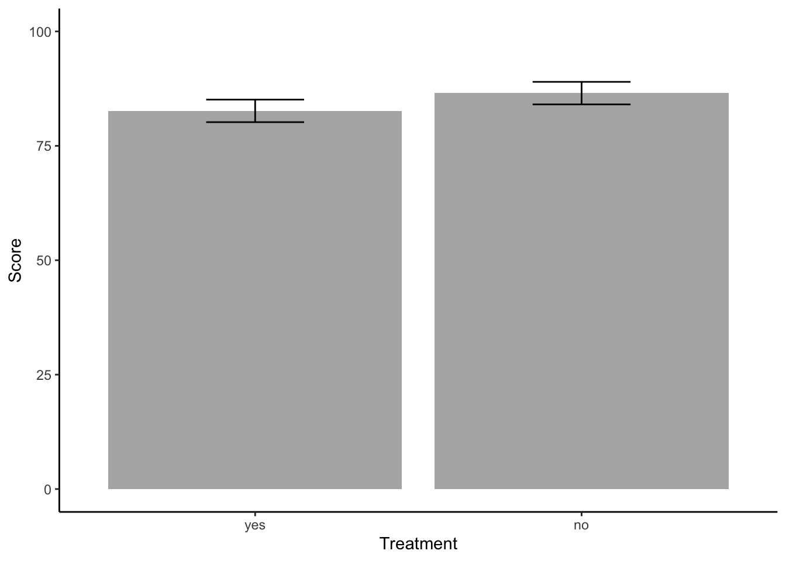

# load all libraries for this tutorial
library(datarium)
library(dplyr)
library(emmeans)
library(afex)
library(ggplot2)Tutorial นี้จะแสดงวิธีการวิเคราะห์ความแปรปรวนร่วม (ANCOVA)
ในตัวอย่างนี้ เราจะใช้ข้อมูล stress จาก datarium package
ข้อมูลนี้เป็นการทดลองว่า treatment และ exercise
มีผลต่อ score หรือไม่ โดยมี age เป็น covariate
ตัวแปรทุกตัวได้รับตั้งค่าประเภทตัวแปรแล้ว
data(stress)
str(stress)## tibble [60 × 5] (S3: tbl_df/tbl/data.frame)
## $ id : int [1:60] 1 2 3 4 5 6 7 8 9 10 ...
## $ score : num [1:60] 95.6 82.2 97.2 96.4 81.4 83.6 89.4 83.8 83.3 85.7 ...
## ..- attr(*, "label")= chr "Cholesterol concentration (in mmol/L)"
## ..- attr(*, "format.spss")= chr "F8.2"
## ..- attr(*, "display_width")= int 9
## $ treatment: Factor w/ 2 levels "yes","no": 1 1 1 1 1 1 1 1 1 1 ...
## $ exercise : Factor w/ 3 levels "low","moderate",..: 1 1 1 1 1 1 1 1 1 1 ...
## $ age : num [1:60] 59 65 70 66 61 65 57 61 58 55 ...
## ..- attr(*, "label")= chr "Body weight (in kg)"
## ..- attr(*, "format.spss")= chr "F8.2"ในการวิเคราะห์ความแปรปรวนร่วมทางเดียว เราจะใช้ treatment
เป็นตัวแปรอิสระ และ age เป็น covariate
โมเดลคือ ตัวแปรสองตัวนี้ร่วมกันอธิบายตัวแปรตาม score จึงใช้
treatment + age
ใช้ option factorize = FALSE เนื่องจากคำสั่ง
aov_car จะแปลงตัวแปรเป็น factor โดยอัตโนมัติ
เผื่อในกรณีที่ผู้ใช้ลืมแปลงตัวแปรเป็น factor (ถ้าหากไม่กำหนด option นี้
aov_car จะพยายามแปลง age เป็น factor แล้วทำให้เกิด
error)
one.ancova.afex <- aov_car(score ~ treatment + age + Error(id), data = stress, factorize = FALSE)## Warning: Numerical variables NOT centered on 0 (i.e., likely bogus results): agesummary(one.ancova.afex)## Anova Table (Type 3 tests)
##
## Response: score
## num Df den Df MSE F ges Pr(>F)
## treatment 1 57 45.132 4.9182 0.079431 0.03058 *
## age 1 57 45.132 21.3676 0.272658 2.218e-05 ***
## ---
## Signif. codes: 0 '***' 0.001 '**' 0.01 '*' 0.05 '.' 0.1 ' ' 1nice(one.ancova.afex, es = "pes") #short summary with partial eta square## Anova Table (Type 3 tests)
##
## Response: score
## Effect df MSE F pes p.value
## 1 treatment 1, 57 45.13 4.92 * .079 .031
## 2 age 1, 57 45.13 21.37 *** .273 <.001
## ---
## Signif. codes: 0 '***' 0.001 '**' 0.01 '*' 0.05 '+' 0.1 ' ' 1จะเห็นว่ามีคำเตือนว่าตัวแปรเชิงตัวเลข ไม่ถูกแปลงเป็นค่ากึ่งกลาง (centered variable;
ค่าตัวแปรที่ลบออกด้วยค่าเฉลี่ยของตัวมันเอง) การแปลงเป็นค่ากึ่งกลางจะช่วยให้ค่า intercept
แสดงถึงค่าเฉลี่ยของกลุ่มอ้างอิง (reference group) เมื่อควบคุมให้ covariate อยู่ที่ค่าเฉลี่ย
ซึ่งไม่ใช่สิ่งที่เราสนใจในกรณีนี้ เราจึงไม่ต้องสนใจคำเตือนนี้ก็ได้
(หากต้องการลองวิเคราะห์โดยใช้ค่าที่ center แล้ว สามารถใช้คำสั่ง
scale() เพื่อแปลงตัวแปร age
เป็นค่ากึ่งกลางก่อนนำไปวิเคราะห์ข้อมูล)
ค่าเฉลี่ยประมาณตามขอบ (estimated marginal means)
เป็นค่าเฉลี่ยของเงื่อนไขแต่ละกลุ่มเมื่อควบคุมค่าตัวแปรร่วม age
ให้คงที่ที่ค่าเฉลี่ยของตัวมันเอง
สังเกตว่าค่า emmeans และค่าเฉลี่ยที่ยังไม่ปรับของแต่ละกลุ่ม จะแตกต่างกันเล็กน้อย
one.ancova.emm <- emmeans(one.ancova.afex, ~ treatment)
summary(one.ancova.emm) # estimated (adjusted) mean## treatment emmean SE df lower.CL upper.CL
## yes 82.6 1.23 57 80.2 85.1
## no 86.5 1.23 57 84.0 89.0
##
## Confidence level used: 0.95by(stress$score, stress$treatment, mean) # raw (unadjusted mean)## stress$treatment: yes
## [1] 82.15667
## --------------------------------------------------------------------------------
## stress$treatment: no
## [1] 86.99667pairs(one.ancova.emm) #pariwise comparison## contrast estimate SE df t.ratio p.value
## yes - no -3.87 1.75 57 -2.218 0.0306emm.summary <- summary(one.ancova.emm)
ggplot(emm.summary, aes(x = treatment, y = emmean)) +
geom_col(alpha = .5, position = position_dodge(.9)) +
geom_errorbar(aes(ymin = lower.CL, ymax = upper.CL), width = .3, position = position_dodge(.9)) +
xlab("Treatment") +
ylab("Score") +
ylim(c(0,100)) +
theme_classic()
การวิเคราะห์ ANCOVA เป็นกรณีพิเศษของ regression เราสามารถใช้
lm() ในการวิเคราะห์ได้เช่นกัน
แต่ผลการวิเคราะห์จาก summary() ของ lm()
นั้นจะอยู่ในรูปแบบ output สำหรับ regression
ค่า coefficient ของ treatment
คือความแตกต่างของค่าเฉลี่ยในสองเงื่อนไขโดยมี no เป็นกลุ่มอ้างอิง
ค่านี้จะสอดคล้องกับการเปรียบเทียบรายคู่ด้านบน (แต่กลับทิศทางเป็นบวก)
one.ancova.lm <- lm(score ~ treatment + age, data = stress)
summary(one.ancova.lm) # summary in regression styled output##
## Call:
## lm(formula = score ~ treatment + age, data = stress)
##
## Residuals:
## Min 1Q Median 3Q Max
## -13.1490 -5.1796 0.2194 4.6729 13.8482
##
## Coefficients:
## Estimate Std. Error t value Pr(>|t|)
## (Intercept) 28.5673 12.1477 2.352 0.0222 *
## treatment1 -1.9373 0.8736 -2.218 0.0306 *
## age 0.9343 0.2021 4.623 2.22e-05 ***
## ---
## Signif. codes: 0 '***' 0.001 '**' 0.01 '*' 0.05 '.' 0.1 ' ' 1
##
## Residual standard error: 6.718 on 57 degrees of freedom
## Multiple R-squared: 0.3384, Adjusted R-squared: 0.3152
## F-statistic: 14.58 on 2 and 57 DF, p-value: 7.712e-06anova(one.ancova.lm) # use type I sum of squares ##AVOID this for most of the time## Analysis of Variance Table
##
## Response: score
## Df Sum Sq Mean Sq F value Pr(>F)
## treatment 1 351.38 351.38 7.7857 0.00715 **
## age 1 964.36 964.36 21.3676 2.218e-05 ***
## Residuals 57 2572.52 45.13
## ---
## Signif. codes: 0 '***' 0.001 '**' 0.01 '*' 0.05 '.' 0.1 ' ' 1หากเราใช้ anova วิเคราะห์โมเดลนี้ เราจะได้ค่า F
ที่แตกต่างจากผลด้านบน เนื่องจากคำสั่ง anova() ของ R นั้นใช้ Type I
SS
การวิเคราะห์ความแปรปรวนร่วม มีข้อสมมติพื้นฐานข้อหนึ่งคือ ค่า slope ระหว่างตัวแปรร่วมและตัวแปรตาม จะเท่ากันในทุกเงื่อนไขของตัวแปรอิสระ กล่าวคือ slope ของ covariate และ DV ในแต่ละเงื่อนไขการทดลองจะต้องขนานกัน
การที่ slope ขนานกันในทุกเงื่อนไขคือการบอกว่าตัวแปรอิสระและตัวแปรร่วม นั้นไม่มีปฏิสัมพันธ์กัน
เราสามารถทดสอบได้โดยการสร้างโมเดลที่มีการทดสอบปฏิสัมพันธ์ของตัวแปรอิสระและตัวแปรร่วม
treatment * age
one.ancova.afex2 <- aov_car(score ~ treatment * age + Error(id), data = stress, factorize = FALSE)## Warning: Numerical variables NOT centered on 0 (i.e., likely bogus results): agesummary(one.ancova.afex2)## Anova Table (Type 3 tests)
##
## Response: score
## num Df den Df MSE F ges Pr(>F)
## treatment 1 56 44.453 2.3110 0.039633 0.1341
## age 1 56 44.453 23.5415 0.295965 1.015e-05 ***
## treatment:age 1 56 44.453 1.8705 0.032322 0.1769
## ---
## Signif. codes: 0 '***' 0.001 '**' 0.01 '*' 0.05 '.' 0.1 ' ' 1เราพบว่าปฏิสัมพันธ์ระหว่างตัวแปรอิสระและตัวแปรร่วมไม่มีนัยสำคัญทางสถิติ
ข้อสมมติฐานพื้นฐานนี้ไม่ถูกละเมิด เราจึงเลือกที่จะใช้ผลจากการวิเคราะห์ ANCOVA
one.ancova.afex ตัวแรกด้านบน
การวิเคราะห์ตัวแปรร่วมสามารถทำใน factorial design ก็ได้ ใน factorial design
นี้มีตัวแปรอิสระแบบจัดประเภทสองตัว คือ treatment และ
exercise ส่วนตัวแปรร่วมคือ age
two.ancova <- aov_car(score ~ treatment * exercise + age + Error(id), data = stress, factorize = FALSE)## Warning: Numerical variables NOT centered on 0 (i.e., likely bogus results): agesummary(two.ancova)## Anova Table (Type 3 tests)
##
## Response: score
## num Df den Df MSE F ges Pr(>F)
## treatment 1 53 24.848 11.0657 0.17272 0.001603 **
## exercise 2 53 24.848 20.7147 0.43873 2.254e-07 ***
## age 1 53 24.848 9.1097 0.14667 0.003903 **
## treatment:exercise 2 53 24.848 4.4458 0.14366 0.016409 *
## ---
## Signif. codes: 0 '***' 0.001 '**' 0.01 '*' 0.05 '.' 0.1 ' ' 1nice(two.ancova, es = "pes")## Anova Table (Type 3 tests)
##
## Response: score
## Effect df MSE F pes p.value
## 1 treatment 1, 53 24.85 11.07 ** .173 .002
## 2 exercise 2, 53 24.85 20.71 *** .439 <.001
## 3 age 1, 53 24.85 9.11 ** .147 .004
## 4 treatment:exercise 2, 53 24.85 4.45 * .144 .016
## ---
## Signif. codes: 0 '***' 0.001 '**' 0.01 '*' 0.05 '+' 0.1 ' ' 1two.ancova2 <- aov_car(score ~ treatment * exercise * age + Error(id), data = stress, factorize = FALSE)## Warning: Numerical variables NOT centered on 0 (i.e., likely bogus results): agesummary(two.ancova2)## Anova Table (Type 3 tests)
##
## Response: score
## num Df den Df MSE F ges Pr(>F)
## treatment 1 48 27.08 0.0650 0.001351 0.79991
## exercise 2 48 27.08 0.0900 0.003734 0.91413
## age 1 48 27.08 4.5622 0.086796 0.03781 *
## treatment:exercise 2 48 27.08 0.1097 0.004549 0.89634
## treatment:age 1 48 27.08 0.0082 0.000171 0.92821
## exercise:age 2 48 27.08 0.0745 0.003094 0.92834
## treatment:exercise:age 2 48 27.08 0.0730 0.003034 0.92967
## ---
## Signif. codes: 0 '***' 0.001 '**' 0.01 '*' 0.05 '.' 0.1 ' ' 1ตัวแปร age ไม่มีปฏิสัมพันธ์กับตัวแปรอิสระใด ๆ และไม่มีปฏิสัมพันธ์สามทาง จึงไม่ละเมิดเรื่อง
homogeneity of regression เราจึงเลือกใช้ผลการวิเคราะห์จาก โมเดล ANCOVA
treatment * exercise + age ได้
ค่าเฉลี่ยประมาณตามขอบในการวิเคราะห์นี้เป็นค่าตัวแปรตามที่ถูกควบคุมเมื่อตัวแปรร่วม
age คงที่อยู่ที่ค่าเฉลี่ย
วิธีการสร้าง emmeans และการเปรียบเทียบรายคู่ ทำเหมือน factorial ANOVA ตามปกติ ค่าที่ได้จะเป็นค่าจากโมเดลซึ่งควบคุมตัวแปรร่วมแล้ว
two.ancova.emm <- emmeans(two.ancova, ~ treatment | exercise)
mean(stress$age) # control age at its mean## [1] 59.95summary(two.ancova.emm)## exercise = low:
## treatment emmean SE df lower.CL upper.CL
## yes 87.0 1.60 53 83.8 90.2
## no 88.5 1.62 53 85.3 91.7
##
## exercise = moderate:
## treatment emmean SE df lower.CL upper.CL
## yes 87.0 1.58 53 83.8 90.2
## no 88.7 1.59 53 85.5 91.9
##
## exercise = high:
## treatment emmean SE df lower.CL upper.CL
## yes 73.3 1.65 53 70.0 76.6
## no 83.0 1.61 53 79.8 86.3
##
## Confidence level used: 0.95pairs(two.ancova.emm)## exercise = low:
## contrast estimate SE df t.ratio p.value
## yes - no -1.53 2.23 53 -0.685 0.4961
##
## exercise = moderate:
## contrast estimate SE df t.ratio p.value
## yes - no -1.68 2.25 53 -0.748 0.4575
##
## exercise = high:
## contrast estimate SE df t.ratio p.value
## yes - no -9.75 2.23 53 -4.362 0.0001หากต้องการประมาณค่าเฉลี่ยตามขอบ (ค่าเฉลี่ยของแต่ละเงื่อนไข)
โดยกำหนดค่าตัวแปรควบคุมเป็นค่าอื่น สามารถใช้ option at = list()
กำหนดค่าของตัวแปรควบคุมที่ต้องการได้
emmeans(two.ancova, ~ treatment | exercise, at = list(age = 30))## exercise = low:
## treatment emmean SE df lower.CL upper.CL
## yes 71.9 5.52 53 60.8 83.0
## no 73.4 5.58 53 62.2 84.6
##
## exercise = moderate:
## treatment emmean SE df lower.CL upper.CL
## yes 71.9 5.18 53 61.5 82.3
## no 73.6 5.47 53 62.6 84.6
##
## exercise = high:
## treatment emmean SE df lower.CL upper.CL
## yes 58.2 4.77 53 48.6 67.8
## no 67.9 4.91 53 58.1 77.8
##
## Confidence level used: 0.95Copyright © 2022 Kris Ariyabuddhiphongs